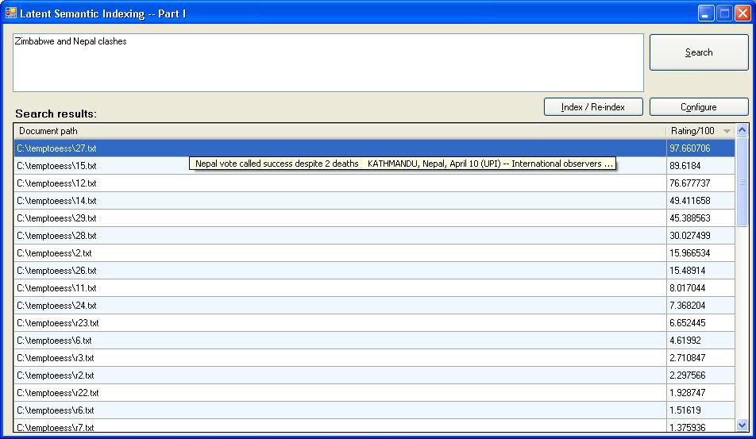
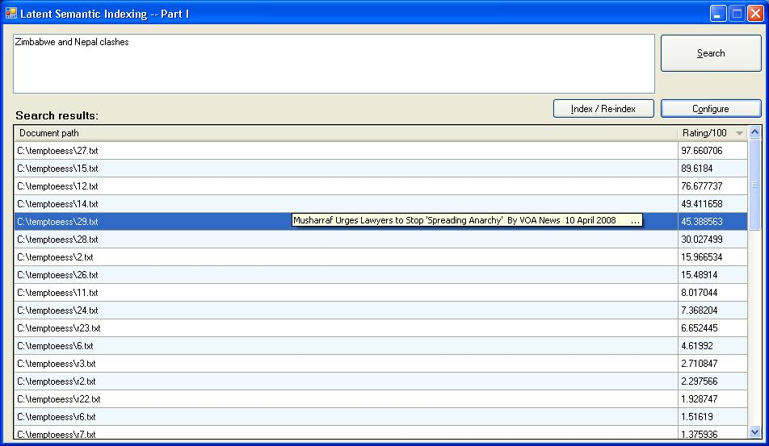
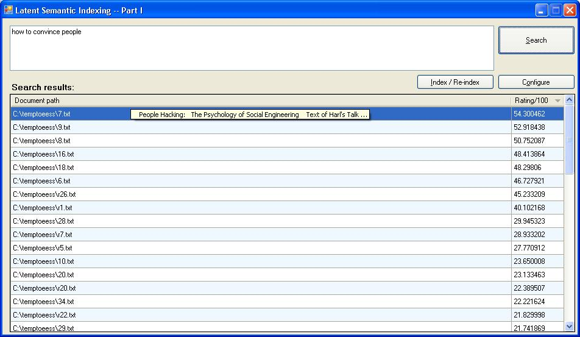

|
Back to homepage
This article will explain latent semantic indexing and show its demo implementation in C# .NET. This is Part-1 (the basics). The future version(s) will focus on scalability, precision, configuration and usability. Work related to Part 1 has been completed and will be published in some time. Please check this page again later. Examples from a sample collection of documents  Simple search query w.r.t. contents in the sample. Show the matching documents. Rank approximation: 35% of collection  The same query, but see the document in highlighted result. The document mentions word "fighting" which is synonymous to "clash". (Of course, the collection must have enough content to be able to establish synonymy) Rank approximation: 35% of collection  Another random query that just occurred to me. The word "people" is present in the documents. The word "convince" does not occur in the highlighted document. But, interestingly, it ranks documents related to "social engineering" Rank approximation: 35% of collection Home |